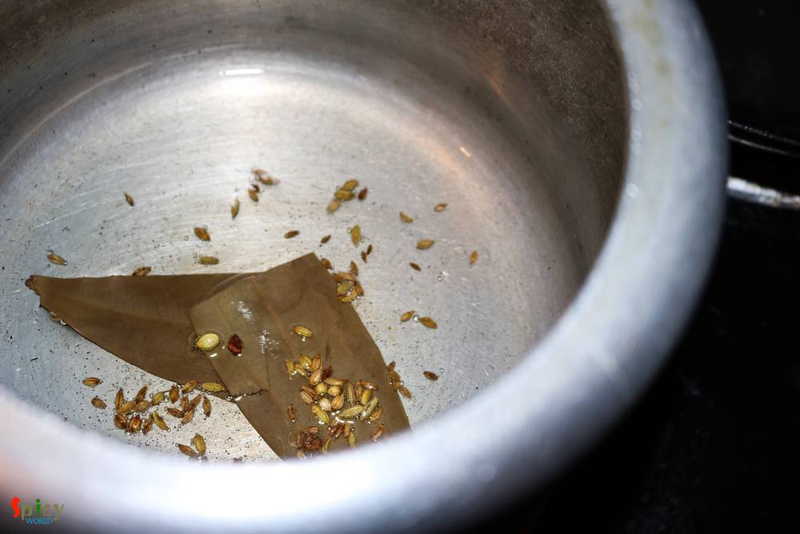
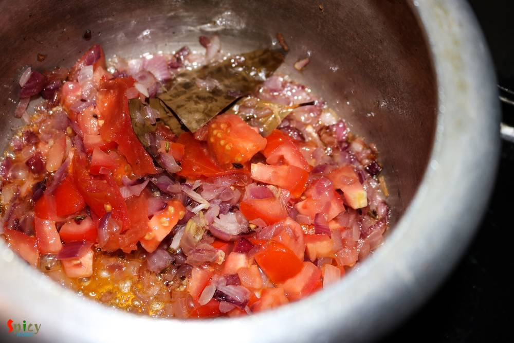
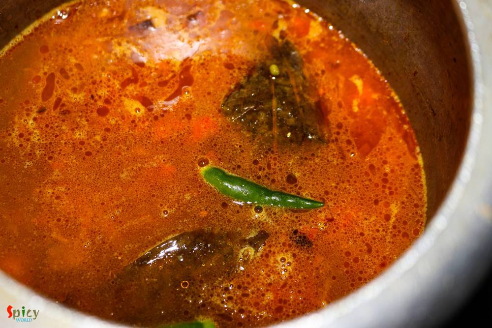

Simple and Easy Recipes
Whole Moong Curry / Sabut Moong Daal Tadka
© 2016 Spicy World, Published on: Jul 21, 2016
How many of you guys clean your kitchen pantry often ? Well, I do it once / twice in a year .... very common for a super lazy person ! Last week I found half bag of whole moong daal in my pantry which was sitting behind a pack of pasta without whispering a word. Then I thought why not make a very simple daal like comfort food. Didn't get time to soak the lentils in water, that's why I used pressure cooker. But you have to try this recipe in your kitchen because it turned out very tasty without any hassle. I followed an easy recipe to make it, to go with plain rice and rotis.

Ingredients
- Half cup of whole moong green lentils.
- 1 onion, chopped.
- 1 Teaspoon of ginger and garlic paste.
- 1 small tomato, chopped.
- 3 green chilies.
- Whole spices (1 Tablespoon of crushed coriander seeds, 1 Tablespoon of cumin seeds, 1 bay leaf).
- Salt and sugar.
- 3 Tablespoons of oil.
- Spice powder (1 Teaspoon of turmeric powder, 2 Teaspoons of red chilli powder, 1 Teaspoon of each roasted cumin and coriander powder).
- 1 clove of garlic, chopped.
- Water.
- Some chopped coriander leaves.

Steps
Heat 2 Tablespoons of oil in a cooker.
Saute a bay leaf, half of the cumin and crushed coriander seeds for few seconds.
Add the chopped onion with pinch of salt. Fry for 6 minutes.
Then add ginger and garlic paste. Cook for 3 minutes.
Add the chopped tomato. Cook for 5 minutes.
Then add all of the spice powder and pinch od sugar. Mix very well.
Now add the washed lentils. Mix well.

Add 2 cups of water, more salt and green chilies. Give it a mix and pressure cook it until the lentils becomes soft.
After cooking the daal properly, now it's time to make tempering.
Heat a Tablespoon of oil in another pan.
Add chopped garlic, half Teaspoon of red chilli powder and the remaining cumin and crushed coriander seeds in hot oil. Saute for few seconds and immediately pour this over the cooked daal.
Your sabut moong daal is ready ...
Serve this hot with plain rice / roti ...
")